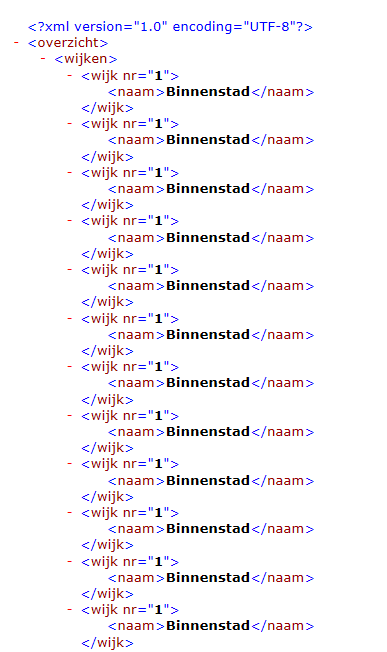
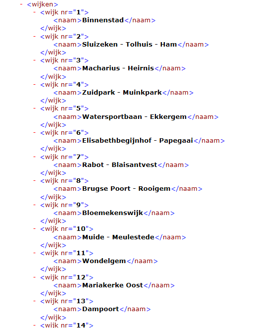
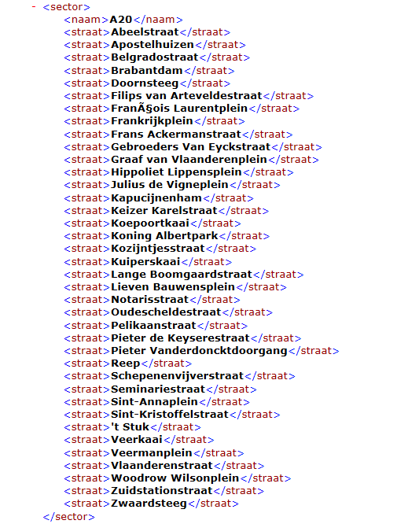
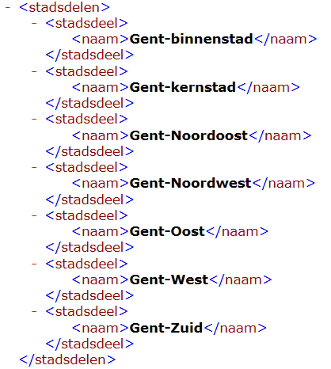
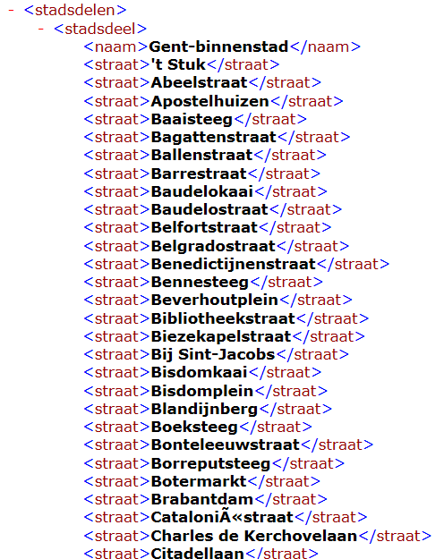

Opdracht
In dit labo transformeren we op verschillende manieren het XML-bestand met de
straten van Stad Gent. Open dit bestand in een teksteditor of browser. Het bestand is te groot om in Netbeans te bekijken.
Een overzicht van de transformaties die je moet implementeren:
- Wijken gesorteerd op volgnummer, dubbels toegelaten.
- Wijken gesorteerd op volgnummer, dubbels NIET toegelaten.
- Straten uit de sector A20, alfabetisch gesorteerd.
- Stadsdelen, alfabetisch gesorteerd.
- Straten per stadsdeel.
Merk op dat de figuren maar een deel van de uitvoer tonen.
-
Schrijf een XSLT die op basis van het stratenbestand alle wijken volgens oplopend
volgnummer uitschrijft. In de eerste versie mag je de "dubbels" behouden.

- Lees het artikel
Grouping Using the Muenchian Method en gebruik de eerst beschreven methode om een XML-bestand met alle wijken te maken.
Dit is de methode die nog geen gebruik maakt van keys, maar wel van de lange asnamen.

-
Lees het vervolg van het artikel en gebruik een xsl-element
key) om
alle straten uit sector A20 uit te schrijven met een XSLT.

- Gebruik de tweede methode "The Muenchian Method" (met het xsl-element
key) om een XSLT
te maken die alle stadsdelen gesorteerd uitschrijft (zonder dubbels).

- Maak tot slot een XSLT die alle stadsdelen uitschrijft en per stadsdeel ook de straten vermeldt.
(zonder dubbels in de stadsdelen en straten) Gebruik hiervoor een samengestelde sleutel m.b.v de functie
concat (zie
distinct nodes on multiple-keys
of grouping-by-2-fields-in-xsl).
Uitleg over de functie generate-id() vind je op w3schools.
